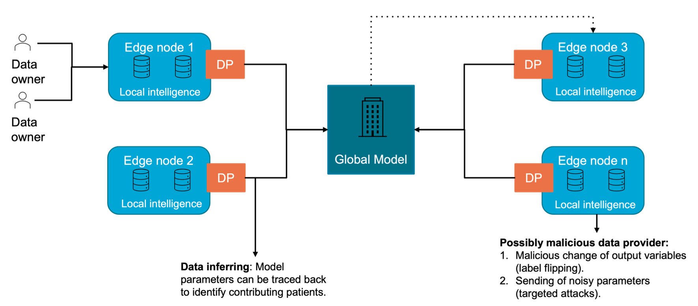
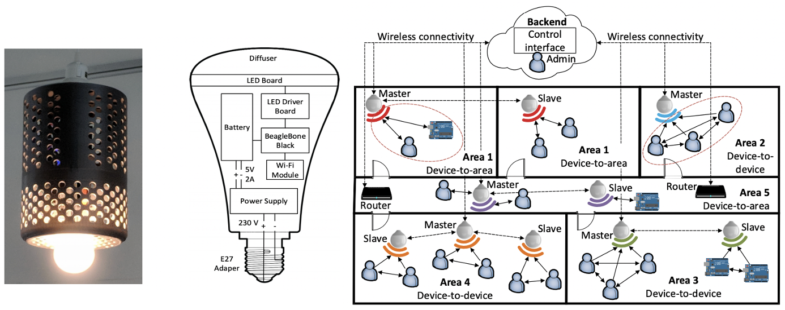
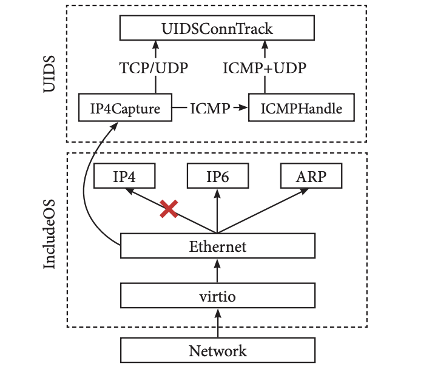
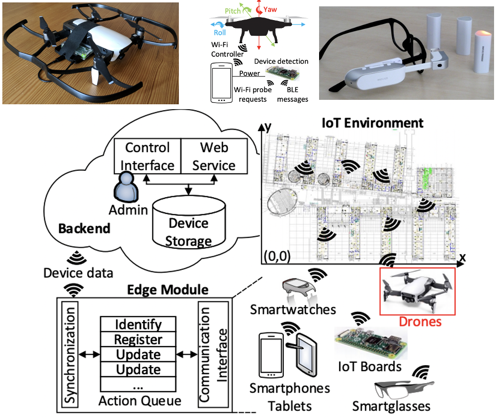
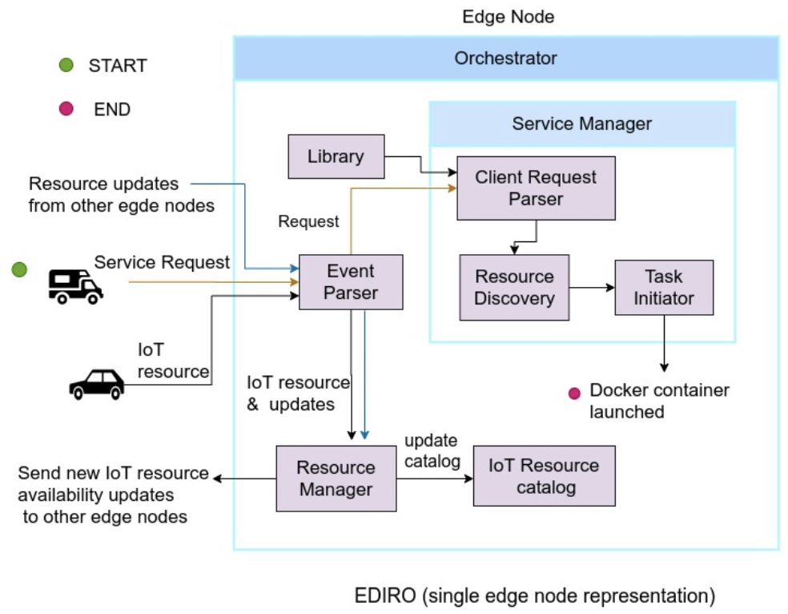
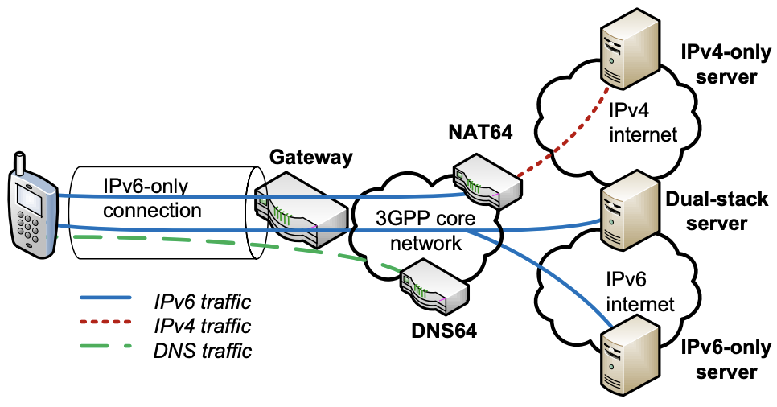
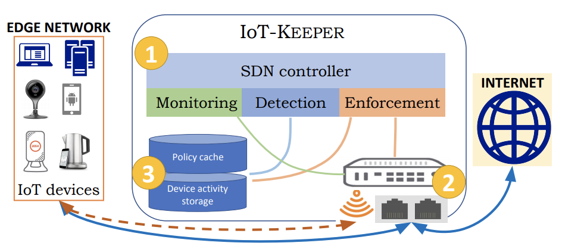
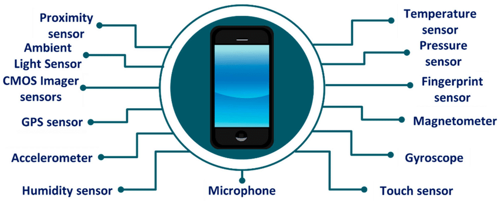

|
Aaron Ding, PhD Director,  & H2020 SPATIAL (€5M) & H2020 SPATIAL (€5M)Associate Professor (Ius Promovendi), TU Delft Associate Professor, University of Helsinki Editorial Board, ACM Transactions on IoT Editorial Board, Springer Nature Computing Founder, FCN Series Founder, ACM EdgeSys Google Scholar Email: Aaron.Ding (at) tudelft.nl |
| Home | Publications | Projects | Education | Group | Services | Code+Data | Misc |
Code & Data Highlight
"Writing code is not production, it's not always craftsmanship though it can be, it is design." -- Joel Spolsky System implementations and data are key part of my research. Besides delivering contributions via scientific publications, CPI Lab always release, if permitted, our work as open-source software and datasets. Here I list software implementations and datasets that are completed through CPI projects. The source codes and datasets can be found in corresponding repositories. Quick link to Source Codes | Research Datasets
System Implementations
SoftOfflod Homepage
SoftOfflod Team
- Aaron Ding - TU Delft / Helsinki
- Yanhe Liu - Sina / Helsinki
- Hannu Flinck - Nokia Bell Labs
- Sasu Tarkoma - Helsinki
- Henning Schulzrinne - Columbia
- Jon Crowcroft - Cambridge
SoftOfflod Code

MADNet Publications
- "Energy Awareness in Mobile Traffic Offloading"
Aaron Ding, Jon Crowcroft
Cambridge University Press: Smartphone Energy Consumption: Modelling and Optimization, 2014. -
"Enabling Energy-Aware Collaborative Mobile Data Offloading for Smartphones"
Aaron Ding, Bo Han, Yu Xiao, Pan Hui, Aravind Srinivasan, Markku Kojo, Sasu Tarkoma
IEEE SECON, New Orleans, USA, June 2013. -
"Collaborative Communication and Sensing for Mobile Systems"
Aaron Ding, Jon Crowcroft, Sasu Tarkoma
ACM SenSys Doctoral Colloquium, Rome, Italy, November 2013. -
"Enable Energy-Aware Mobile Data Offloading for Smartphones through Vertical Collaboration"
Aaron Ding, Pan Hui, Markku Kojo, Sasu Tarkoma
ACM CoNEXT PhD Student Workshop, Nice, France, December 2012. (32 accepted out of 62 submissions) -
"Enabling Energy-aware and Collaborative Management of Data Traffic for Mobile Systems"
Aaron Ding, Markku Kojo, Sasu Tarkoma
ACM EuroSys Doctoral Workshop, Bern, Switzerland, April 2012.
MADNet Team
- Aaron Ding - TU Delft / Helsinki
- Yu Xiao - Aalto
- Bo Han - AT&T Research / UMD
- Pan Hui - Deutsche Telekom Labs
- Sasu Tarkoma - Helsinki
MADNet Code


NAO Publications
-
"Toward Network Controlled IP Traffic Offloading"
Jouni Korhonen, Teemu Savolainen, Aaron Ding, Markku Kojo
IEEE Communications Magazine (IEEE COMMAG), Volume 51, Issue 3, p.96 - 102, 2013. -
"Controlling Traffic Offloading Using Neighbor Discovery Protocol"
Jouni Korhonen, Teemu Savolainen, Aaron Ding
IETF Internet Draft, 2012. -
"NAO: A Framework to Enable Efficient Mobile Offloading"
Aaron Ding, Jouni Korhonen, Pan Hui, Teemu Savolainen, Sasu Tarkoma, Markku Kojo
ACM Middleware PDT Workshop, Lisbon, Portugal, December 2011. -
Aaron Ding, Jouni Korhonen, Teemu Savolainen, "Controlling Traffic Offloading Using Neighbor Discovery Protocol", In Proceedings of IETF-83, Internet Area, France, 2012.
» Presentation at IETF, Paris. -
Aaron Ding, Jouni Korhonen, Teemu Savolainen, "Controlling Traffic Offloading Using Neighbor Discovery Protocol", In Proceedings of IETF-82, Internet Area, 2011.
» Presentation at IETF, Taipei.
NAO Team
- Aaron Ding - TU Delft / Helsinki
- Jouni Korhonen - Broadcom
- Teemu Savolainen - Nokia
- Peng Liu - Aalto
- Yonghao Li - Helsinki
- Markku Kojo - Helsinki
- Sasu Tarkoma - Helsinki
NAO Code
- Linux kernel extensions and P-GW/GGSN module - classified under industrial partner agreement.
Fair EVA
FL-DP
     
IoT-Keeper dataset
iPresence
UIDS
iConfig
EDIRO
DNS64
Research Datasets

PerCrowd dataset
